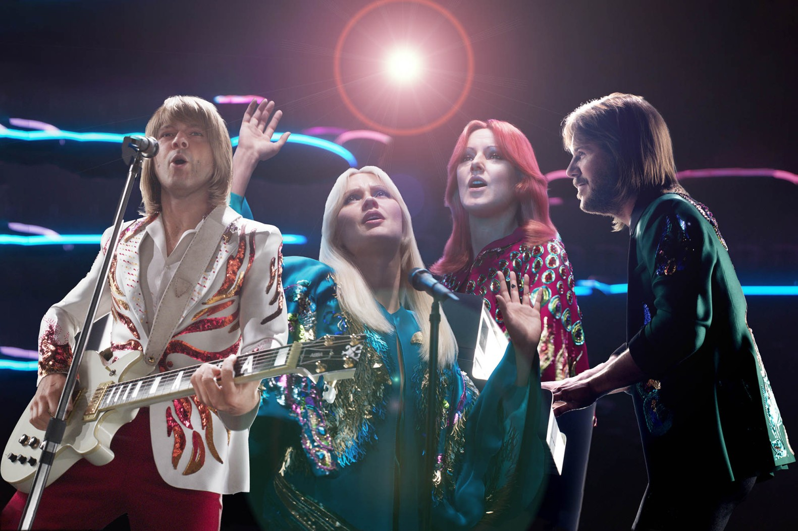
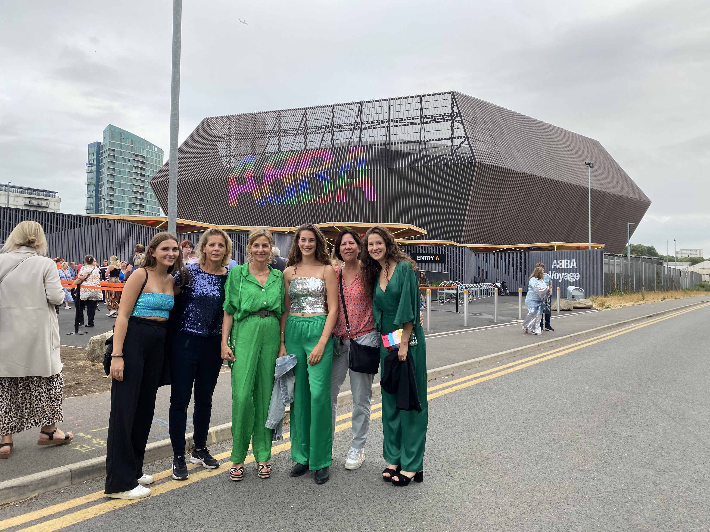
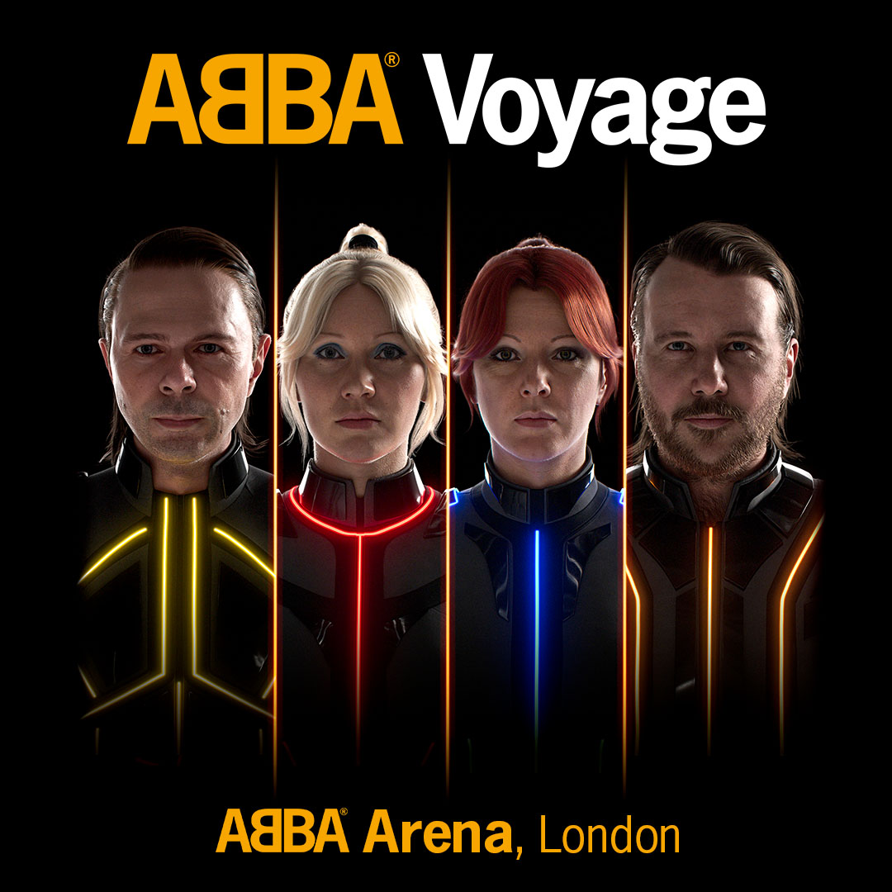

Voyage
Het ABBA Voyage-concert is een speciale show waar je een optreden kunt bekijken van digitale versies van de oorspronkelijke ABBA-leden. In plaats van de echte mensen zijn er door de computer gemaakte karakters die op hen lijken. Tijdens het concert hoor je een mix van klassieke ABBA-nummers zoals "Dancing Queen" en nieuwe nummers van hun nieuwste album, "Voyage." Het is alsof je een ABBA-concert bijwoont, maar het gebeurt allemaal in een digitale wereld. De ABBA Voyage Arena is een speciaal gebouwde locatie in Londen die speciaal is gemaakt voor de digitale en virtuele ABBA Voyage-concertervaring. Het is geen fysieke arena die je persoonlijk kunt bijwonen; in plaats daarvan bestaat het in de wereld van hologrammen waar fans toegang hebben tot en kunnen genieten van de virtuele ABBA-optredens.
  